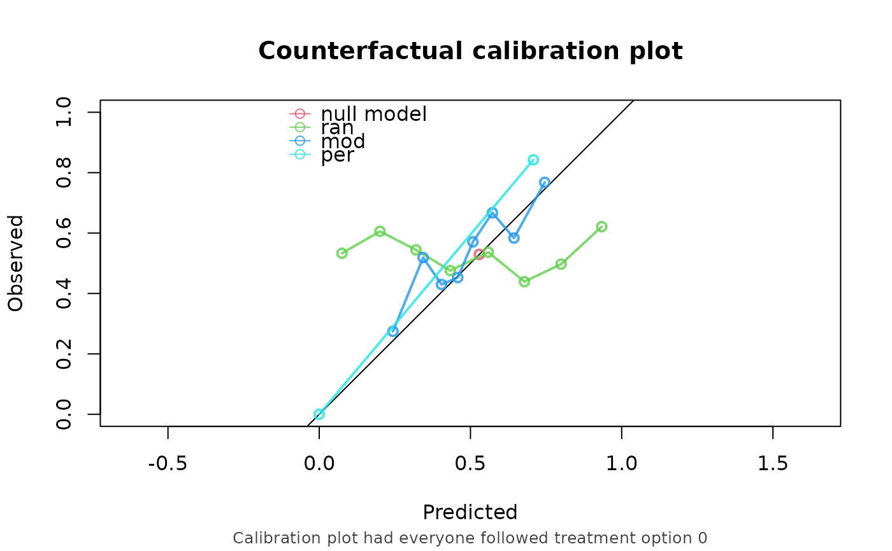
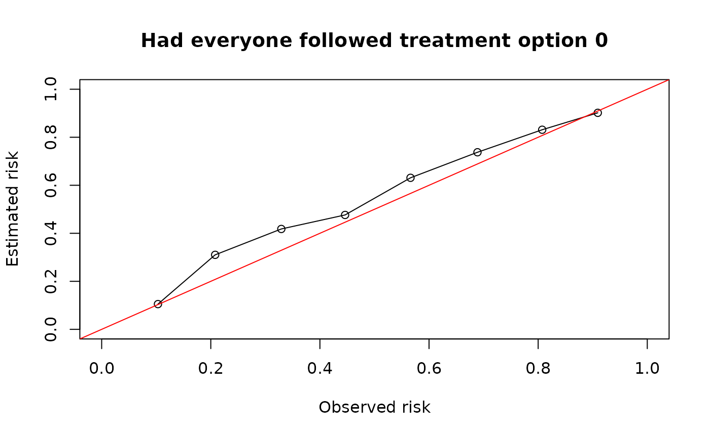
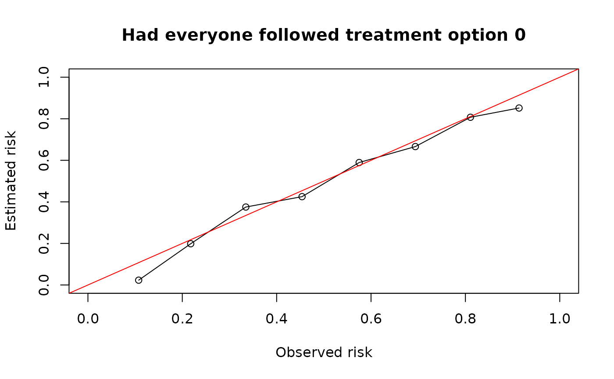

Main CFscore function
CFscore.RdMain CFscore function
Usage
CFscore(
validation_data,
model,
predictions,
outcome_column,
propensity_formula,
ipweights,
treatment_column,
treatment_of_interest,
metrics = c("auc", "brier", "oe", "oeplot"),
null.model = TRUE,
bootstrap = FALSE,
bootstrap_iterations = 200,
quiet = FALSE
)Arguments
- validation_data
A data.frame on which the model is to be validated.
- model
A glm (lm?) to be validated, or a list of glm's to be validated.
- predictions
A numeric vector of predictions, or a list of numeric vectors of predictions. Either model or predictions must be given, not both.
- outcome_column
A character string indicating the name of the observed outcome column in data, or a numeric vector of the observed outcomes.
- propensity_formula
A formula used to estimate the inverse-probability weights for the validation data. Treatment variable should be on the left hand side, all confounders on the right hand side. It is possible that there is a different set of confounders in the validation dataset compared to the model-development dataset. Either this or ipweights must be given
- ipweights
The inverse probabilty weights for the validation data. Can be either string indicating the name of the ip column in the validation data, or a numeric vector of ip-weights.
- treatment_column
A character string indicating the name of the realized treatment column in data. Must be given if ipw's are specified. It is automatically inferred from propensity_formula if given.
- treatment_of_interest
A treatment level for which the counterfactual perormance measures should be evaluated.
- metrics
The metrics to be computed, options are c("auc", "brier", "oe", "oeplot")
- null.model
If TRUE, fit a null model on the counterfactual validation data
- bootstrap
If TRUE, a 95 bootstrapping
- bootstrap_iterations
the number of bootstrap iterations
- quiet
If set to TRUE, don't print assumptions
Examples
simulate_data <- function(n) {
df <- data.frame(id = 1:n)
df$L <- rnorm(n)
df$A <- rbinom(n, 1, plogis(df$L))
df$P <- rnorm(n)
df$Y <- rbinom(n, 1, plogis(0.5 + df$L + 1.25 * df$P - 0.6*df$A))
return(df)
}
set.seed(123)
df_dev <- simulate_data(5000)
df_val <- simulate_data(4000)
naive_model <- glm(Y ~ A + P, family = "binomial", data = df_dev)
propensity_model <- glm(A ~ L, family = "binomial", df_dev)
prop_score <- predict(propensity_model, type = "response")
prob_trt <- ifelse(df_dev$A == 1, prop_score, 1 - prop_score)
ipw <- 1 / prob_trt
causal_model <- glm(Y ~ A + P, family = "binomial", data = df_dev,
weights = ipw)
#> Warning: non-integer #successes in a binomial glm!
CFscore(
validation_data = df_val,
model = list("naive model" = naive_model, "causal model" = causal_model),
outcome_column = "Y",
propensity_formula = A ~ L,
treatment_of_interest = 0
)
#> Estimation of the performance of the prediction model in a
#> counterfactual (CF) dataset where everyone's treatment A was set to 0.
#> The following assumptions must be satisfied for correct inference:
#> - Conditional exchangeability requires that {L} are sufficient to
#> adjust for confounding and selection bias between treatment and
#> outcome.
#> - Positivity (assess $weights for outliers)
#> - Consistency
#> - No interference
#> - Correctly specified propensity formula
#>
#> model auc brier oe
#> null.model 0.500 0.244 1.000
#> naive model 0.741 0.204 1.115
#> causal model 0.741 0.201 0.994
#> model: null.model

#> model: naive model

#> model: causal model
